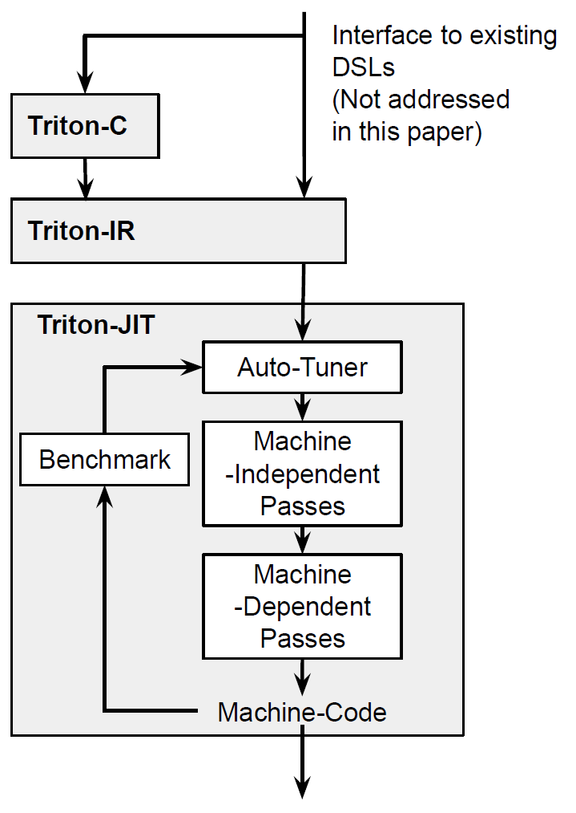
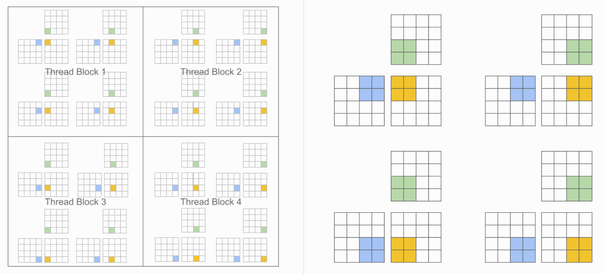
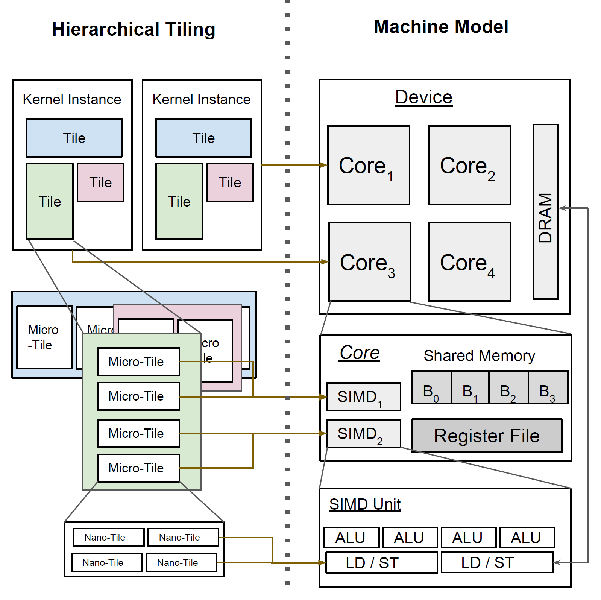
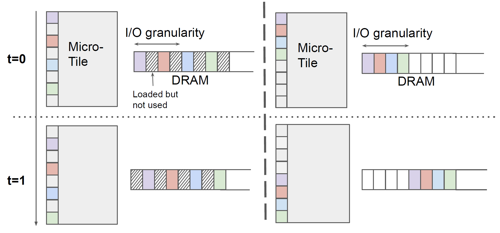
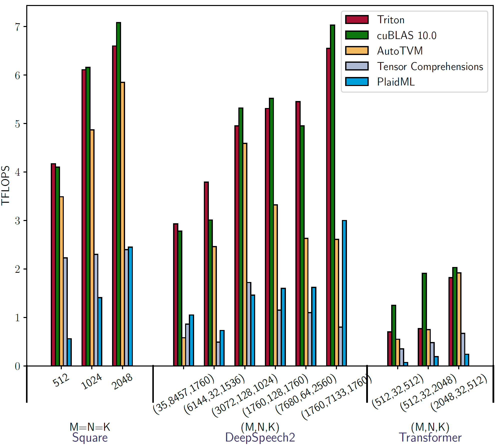
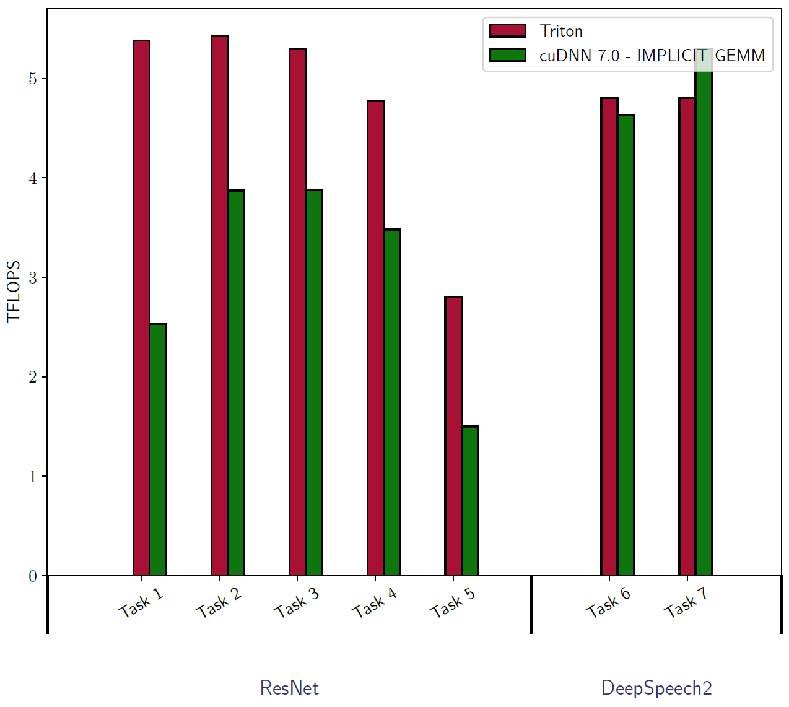
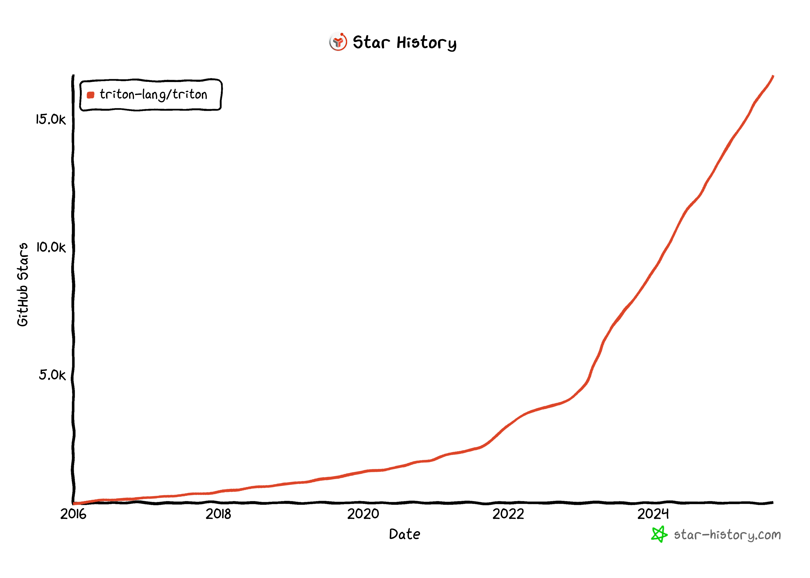

Triton: An Intermediate Language and Compiler for Tiled Neural Network Computations
MAPL ’19
Background & Motivation
A Bottleneck in Deep Learning Innovation
- Vendor libraries (cuBLAS, cuDNN) are fast but inflexible.
- Novel research ideas require custom kernels and are usually limited by the performance.
- Writing high-performance GPU code is expert work and not portable.
Existing Solutions Limitations
- Vendor Libraries (cuBLAS, cuDNN): Highly optimized but only support a restricted set of operations.
- Domain-Specific Languages like TVM, Tensor Comprehensions: More flexible, but often much slower than vendor libraries in practice.
- Hand-written Micro-kernels: Fast and flexible, but require immense manual effort and are not portable.
The Performance Gap

- Existing DSLs often lag behind hand-tuned vendor libraries.
- There is a need for a new abstraction that combines expressiveness with high performance.
The Tile Abstraction Opportunity
- Tile = statically shaped ND sub-arrays
- Tiles are fundamental for GPU memory optimization
- Need compiler infrastructure specifically supporting tile-level operations
- Balance between performance and expressivity for custom operations
- Enable researchers to implement novel operations without GPU expertise
- Existing compilers lack native tile-level operations
- Need for unified tile-centric language and compiler
Goal of Triton
- An open-source language and compiler centered around the concept of tiles.
- Aims to build portable and efficient implementations of any tensor program.
System Design

- Triton-C: C-like language with tile operations
- Triton-IR: LLVM-based intermediate representation
- Triton-JIT: Just-in-time compiler with auto-tuning
Triton-C: tiles & broadcasting
A C-like language for tile operations.
- Simplified SPMD model
- Tile-centric syntax:
int tile[16, 16] - Built-in functions:
dot,trans,get_global_range - NumPy-like broadcasting semantics

Triton-IR
- LLVM-based IR for tile-level analysis.
- First-class tile types:
i32<8, 8> - Novel instructions:
reshape,broadcast,trans,dot - Predicated SSA (PSSA) for control flow within tiles
Triton-JIT (tile-centric)
Machine-Independent Passes - Automatic pre-fetching - Tile-level peephole optimizations
Machine-Dependent Passes - Hierarchical Tiling - Memory Coalescing - Shared Memory Allocation & Synchronization
Auto-Tuner - Automatically extracts & optimizes parameters (e.g., tile sizes)

Triton-JIT (tile-centric)
Machine-Independent Passes - Automatic pre-fetching - Tile-level peephole optimizations
Machine-Dependent Passes - Hierarchical Tiling - Memory Coalescing - Shared Memory Allocation & Synchronization
Auto-Tuner - Automatically extracts & optimizes parameters (e.g., tile sizes)

Evaluation
Setup & baselines
- GPU: NVIDIA GTX1070
- compare vs cuBLAS, cuDNN, AutoTVM, TC, PlaidML.
Matrix Multiplication Performance

- Matches cuBLAS (90%+ peak GPU performance)
- 2-3× faster than Tensor Comprehensions/PlaidML
Convolution Performance

- Comparable performance for DeepSpeech2 workloads
Triton Today: From Research to Industry Standard
The Rise of Triton
- Project Triton was continued at OpenAI.
- GPT-2 & GPT-3 was powered by Triton language.
- Its value was proved by the success of GPT series.
- It has evolved from the C-like “Triton-C” into a Python eDSL, making it far more accessible.
- Rise with Generative Large Language Model

Widespread Adoption
- Favoring ML Research: Many researchers use Triton to quickly implement & validate their ideas
- Industry Standard:
- PyTorch: CUDA-free inference with PyTorch’s
torch.compile - LLM framework: the first-class backend in popular LLM frameworks
- PyTorch: CUDA-free inference with PyTorch’s
- Growing Ecosystem:
- Different Backend: Triton-CPU, Triton-TPU, Triton-NPU.
- Educational: Universities are offering courses on programming GPUs in Triton language.